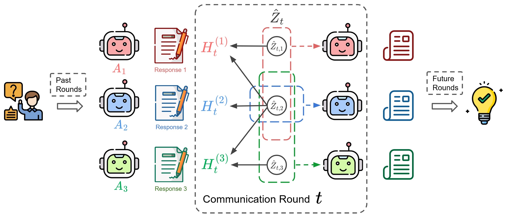

Why it matters왜 중요한가
What if collaborating AI agents could stop talking and just think at each other?
협업하는 AI 에이전트가 말하기를 멈추고 서로에게 생각을 직접 건넬 수 있다면?
Today's LLM multi-agent systems debate in natural language. But language is a narrow pipe: it is sequential, ambiguous, and can only express a compressed shadow of the reasoning behind it. Recent studies trace a large share of multi-agent failures to exactly this — vague message specification and inter-agent misalignment. Machines, unlike humans, are not forced to serialize thoughts into words; they could in principle exchange the latent reasoning directly. The hard part is not sending a hidden state — it is knowing what is actually in it. This paper's contribution is to make that question answerable: it gives the first identifiability theory for the "thoughts" that agents share, and turns it into a working communication method.
오늘날의 LLM 멀티에이전트 시스템은 자연어로 토론한다. 그러나 언어는 좁은 통로다 — 순차적이고 모호하며, 그 뒤에 있는 추론의 압축된 그림자만 전달할 수 있다. 최근 연구들은 멀티에이전트 실패의 상당수를 바로 이 지점 — 모호한 메시지와 에이전트 간 정렬 실패 — 에서 찾는다. 인간과 달리 기계는 생각을 단어로 직렬화할 필요가 없으므로, 원리상 잠재 추론을 직접 주고받을 수 있다. 어려운 부분은 은닉상태를 보내는 것이 아니라, 그 안에 무엇이 들어 있는지 아는 것이다. 이 논문의 기여는 그 질문에 답할 수 있게 만든 데 있다 — 에이전트가 공유하는 "생각"에 대한 최초의 식별가능성 이론을 제시하고, 이를 실제 통신 기법으로 구현한다.

By the numbers핵심 숫자
Head-to-head on MATHMATH 정면 비교
| Base model기반 모델 | Single Answer | Multiagent FT (SOTA) | ThoughtComm |
|---|---|---|---|
| Qwen3-0.6B | 45.80 | 71.20 | 85.00 |
| Qwen3-1.7B | 43.60 | 75.80 | 93.00 |
| Phi-4-mini (3.84B) | 63.80 | 60.20 | 74.60 |
| DeepSeek-R1-Distill-Llama-8B | 42.60 | 72.40 | 82.80 |
| LLaMA3-8B-Instruct | 36.20 | 39.68 | 45.60 |
In one diagram한 장의 그림
The two ideas that make it work작동을 가능케 하는 두 아이디어
Thoughts are provably recoverable생각은 증명 가능하게 복원된다
Model each agent's hidden state as an invertible mixing of latent thoughts, H = f(Z). The authors prove that under sparsity of the Jacobian Jf (plus invertibility and smoothness), the shared thoughts between any two agents, the private thoughts of each, and the whole sharing structure (who holds which thought) are identifiable up to permutation — with no labels or auxiliary supervision.
각 에이전트의 은닉상태를 잠재 생각의 가역 혼합 H = f(Z)로 모델링한다. 저자들은 야코비안 Jf의 희소성(그리고 가역성·매끄러움) 하에서, 두 에이전트 간 공유 생각, 각자의 개별 생각, 그리고 공유 구조 전체(누가 어떤 생각을 갖는지)가 순열을 제외하고 식별 가능함을 증명한다 — 라벨이나 보조 지도 없이.
Route thoughts, then inject as prefixes생각을 라우팅해 프리픽스로 주입
A sparsity-regularized autoencoder maps concatenated agent states into a shared latent space (loss ‖H − f(Z)‖² + ‖Jf‖₁). The recovered Jacobian pattern says which thought each agent should receive; thoughts are reweighted by how many agents "agree" on them, converted to prefix vectors P = g(Z), and prepended to each agent's tokens — steering it without touching the base LLM's weights.
희소 정규화 오토인코더가 연결된 에이전트 상태를 공유 잠재공간으로 매핑한다(손실 ‖H − f(Z)‖² + ‖Jf‖₁). 복원된 야코비안 패턴이 각 에이전트가 받아야 할 생각을 알려주고, 생각은 몇 개 에이전트가 "동의"하는지에 따라 재가중된 뒤 프리픽스 벡터 P = g(Z)로 변환되어 각 에이전트 토큰 앞에 붙는다 — 기반 LLM 가중치를 건드리지 않고 유도한다.
Language was the bottleneck언어가 병목이었다
Natural-language debate is lossy and often the root cause of multi-agent failure. Communicating in latent space — "telepathy" for models — sidesteps serialization, but only becomes trustworthy once you can prove what is being shared. Identifiability is the missing piece that makes latent communication principled rather than a black box.
자연어 토론은 손실이 크고 멀티에이전트 실패의 근원인 경우가 많다. 잠재공간 통신 — 모델의 "텔레파시" — 은 직렬화를 우회하지만, 무엇이 공유되는지 증명할 수 있을 때에만 신뢰할 수 있다. 식별가능성이 바로 잠재 통신을 블랙박스가 아닌 원리적 방법으로 만드는 빠진 조각이다.
How it works어떻게 작동하나
- Collect model states.모델 상태 수집. At each debate round, take every agent's hidden states Ht(i) as the observable signals of its reasoning. 매 토론 라운드에서 각 에이전트의 은닉상태 Ht(i)를 그 추론의 관측 신호로 취한다.
- Encode to shared latent thoughts.공유 잠재 생각으로 인코딩. Train a sparsity-regularized autoencoder to invert the mixing: Ẑ = f⁻¹(H), penalizing the Jacobian so each thought touches as few agents as possible. 희소 정규화 오토인코더로 혼합을 역변환: Ẑ = f⁻¹(H). 각 생각이 최대한 적은 에이전트에만 닿도록 야코비안을 벌점화한다.
- Recover the sharing structure.공유 구조 복원. Read the Jacobian's non-zero pattern to see which latent thought drives which agents — separating shared from private — then reweight each thought by agent agreement. 야코비안의 비영(non-zero) 패턴을 읽어 어떤 잠재 생각이 어떤 에이전트를 구동하는지 파악하고(공유 vs 개별), 각 생각을 에이전트 동의도로 재가중한다.
- Inject as prefixes.프리픽스로 주입. Map each agent's personalized thoughts to prefix vectors and prepend them to its token embeddings; a small adapter g is trained with a semantic-similarity loss so generation stays coherent. 각 에이전트의 개인화된 생각을 프리픽스 벡터로 변환해 토큰 임베딩 앞에 붙인다. 작은 어댑터 g는 의미 유사도 손실로 학습되어 생성이 일관되게 유지된다.
- Debate and answer.토론하고 답한다. Agents keep reasoning with injected thoughts across rounds; the majority/consensus over agents gives the final answer. Only the autoencoder + adapter are trained (500 examples), never the LLMs. 에이전트들은 주입된 생각으로 라운드에 걸쳐 계속 추론하고, 에이전트 다수결/합의로 최종 답을 낸다. 오토인코더 + 어댑터만 학습(500개 예제)하고 LLM은 건드리지 않는다.
What to take away그래서, 가져갈 것
Thought-level communication lifts MATH accuracy from 75.8% (SOTA multiagent finetuning) to 93.0% on Qwen3-1.7B, averaging +19% relative over SOTA and +67% over single-agent across five LLMs.
생각 수준 통신은 Qwen3-1.7B의 MATH 정확도를 75.8%(SOTA 멀티에이전트 파인튜닝)에서 93.0%로 끌어올리며, 5개 LLM 평균 SOTA 대비 +19%, 단일 에이전트 대비 +67% 상대 향상.
The real headline is theoretical: the first proof that shared/private latent "thoughts" and their sharing graph are identifiable from agents' hidden states alone, with no supervision — turning latent communication from a hack into a principled operation.
진짜 핵심은 이론이다 — 에이전트 은닉상태만으로 공유·개별 잠재 "생각"과 그 공유 그래프가 지도 없이 식별 가능함을 최초로 증명해, 잠재 통신을 임시방편에서 원리적 연산으로 바꾼다.
It's training-light and modular: only a sparse autoencoder plus a small prefix adapter (500 examples), no base-model finetuning, and robust to prefix length (1→16 tokens, <5% swing).
학습이 가볍고 모듈러하다 — 희소 오토인코더 + 작은 프리픽스 어댑터(500 예제)만 필요하고 기반 모델 파인튜닝이 없으며, 프리픽스 길이(1→16 토큰)에 강건하다(<5% 변동).